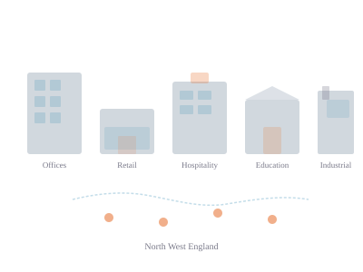

Sectors We Serve
Supporting commercial and public-sector organisations across a range of building types and operating environments.

Frostline works with commercial customers whose buildings depend on properly functioning heating, cooling and ventilation. We understand that each sector has different operating patterns, compliance requirements and service expectations.
Offices & Commercial Property
Office landlords, managing agents and owner-occupiers rely on comfortable, controlled environments for their tenants and staff. We support single offices and multi-tenanted buildings with maintenance, reactive repair and system replacements — working around business hours and managing disruption carefully.
Retail
Independent retailers, regional chains and shopping centres need reliable climate control for customer comfort and product protection. We work with store managers and property teams to keep systems running during trading hours, scheduling maintenance to minimise impact on the sales floor.
Hospitality & Leisure
Hotels, restaurants, pubs and leisure venues depend on guest comfort and kitchen ventilation. We understand the operating pressures of hospitality — out-of-hours access requirements, seasonal demand peaks and the business cost of downtime during service.
Education
Schools, colleges and academy trusts need safe, comfortable learning environments maintained within constrained budgets. We schedule around term times, work with site caretakers and facilities teams, and understand the safeguarding and access requirements of educational premises.
Healthcare & Care
Care homes, supported-living facilities and health-sector premises require reliable heating and ventilation for vulnerable occupants. We recognise the heightened priority of maintaining comfort and safety in these environments, and work around continuous occupation.
Light Industrial & Warehousing
Warehouses, workshops and light-industrial premises have specific heating and ventilation needs — from process cooling and extraction to office comfort within larger industrial buildings. We work with operations managers to maintain systems that support both people and processes.
Multi-Site & Facilities Management
Businesses operating across multiple locations and facilities-management providers need a single contractor who can deliver consistent service across a portfolio. We support multi-site maintenance contracts with coordinated scheduling, consistent reporting and a single point of contact for your whole estate.
Regional coverage
Frostline operates primarily across North West England. Most work is completed within a two-hour travel radius of our Greater Manchester depot.
Greater Manchester
Lancashire
Merseyside
Cheshire
West Yorkshire
We also support established customers with sites elsewhere in England where the relationship and logistics make sense.